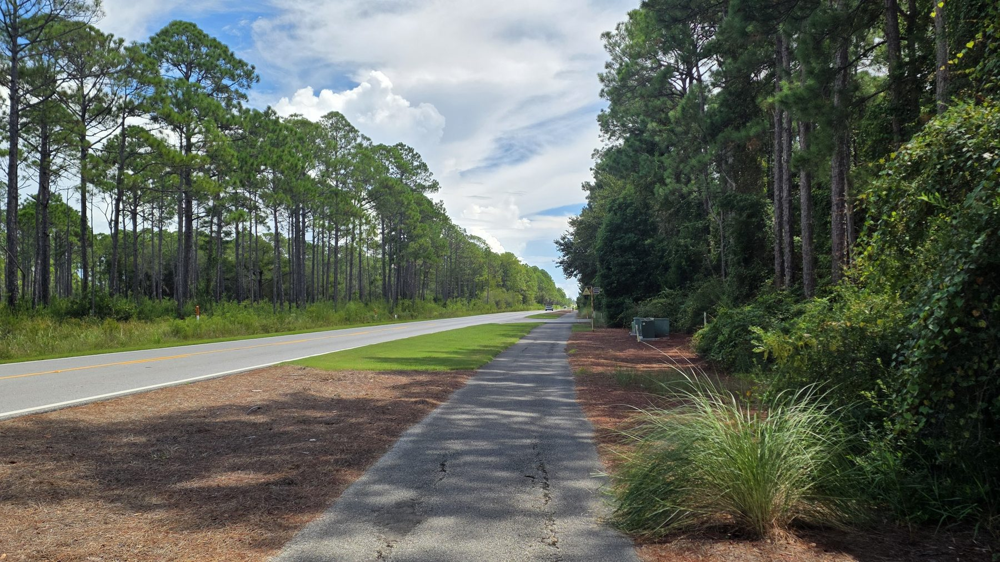

Have Your Say on the South Walton Connector
South Walton residents, property owners, businesses and visitors are invited to share their views about a potential additional connection between Scenic 30A and US 98.
TAKE THE COMMUNITY SURVEY BELOW

Survey received
Thank you. Your response is on its way.